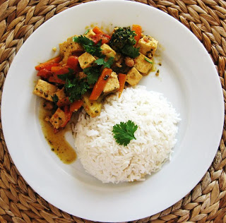

Curry Vegano Tailandés
De: Geurt van Onderen

Ingredientes para tres personas:
- 3 cebollas pequeñas
- 4 dientes de ajo
- 1 dl. de caldo de hierbas
- 4 dl. de leche de coco
- 2 cucharaditas de pasta de curry roja
- 3 cucharaditas de pasta de coco (santen)
- 500 gr. tofu (queso de soja)
- 500 gr. verduras variadas (champiñones, guisantes tiernos, calabacines, u otras).
Preparación
- Calentar un poco de aceite vegetal, y echar la cebolla troceada.
- Mover hasta que se dore y añadir el ajo picado o bien machacado. Mover un poco más y agregar las verduras. Saltear hasta que estén medio hechas.
- Añadir el tofu, cortado en cubitos, y saltear hasta que se doren un poco. Calentar la leche de coco y mezclar con el caldo y la pasta de curry. Mover hasta que todo esté bien mezclado.
- Cuando hierva el caldo de coco, añadirlo a las verduras. Añadir la pasta de coco para espesar el curry. Calentar un poco más, moviéndolo de vez en cuando.
- Añadir el cilantro fresco y servirlo con arroz.